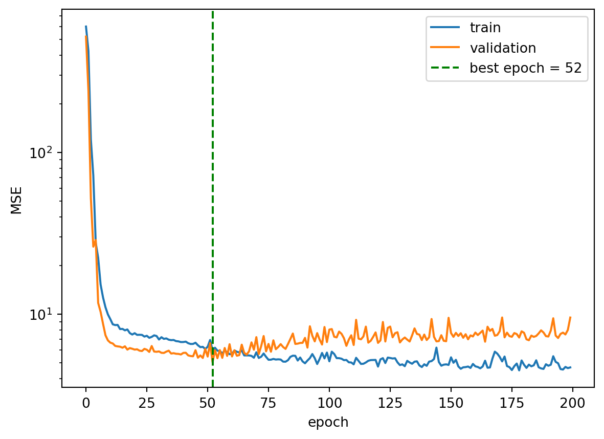
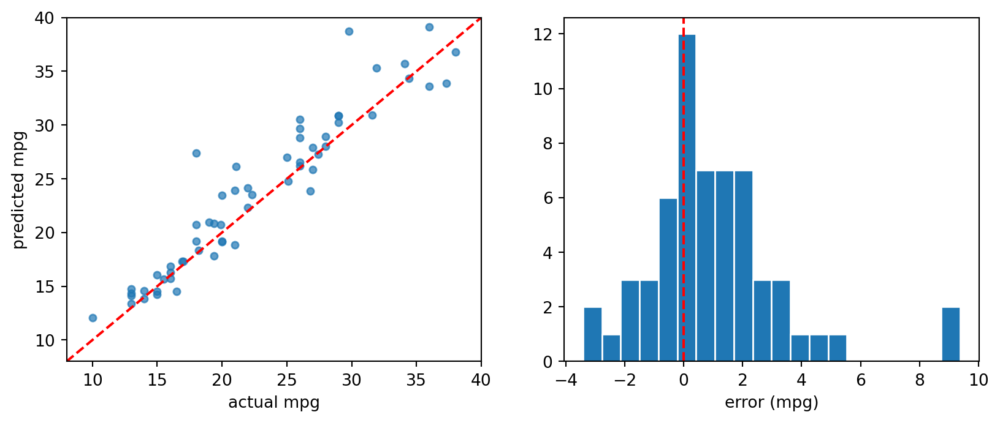
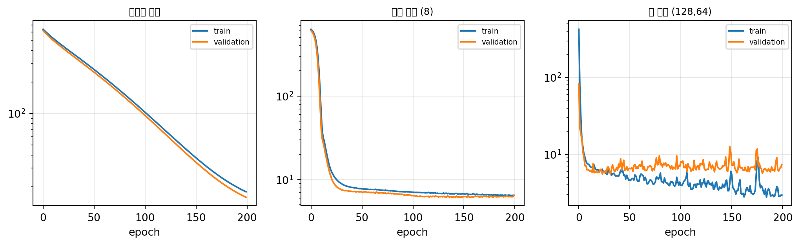

import numpy as np
import pandas as pd
import torch
import torch.nn as nn
import matplotlib.pyplot as plt
import copy
from torch.utils.data import TensorDataset, DataLoader
torch.manual_seed(42)<torch._C.Generator at 0x787b7fe75890>
import numpy as np
import pandas as pd
import torch
import torch.nn as nn
import matplotlib.pyplot as plt
import copy
from torch.utils.data import TensorDataset, DataLoader
torch.manual_seed(42)<torch._C.Generator at 0x787b7fe75890>지난주 loss.backward() 가 기울기를 구해 주었다. 그 안에서 무슨 일이 일어나는지 작은 2층 신경망으로 따라간다.
\[x \;\xrightarrow{w_1, b_1}\; z_1 \;\xrightarrow{\sigma}\; a_1 \;\xrightarrow{w_2, b_2}\; \hat{y} \qquad \mathcal{L} = (y - \hat{y})^2\]
x, y_true = 1.5, 2.0
w1, b1 = 0.8, 0.1
w2, b2 = 1.2, -0.3
sigmoid = lambda t: 1 / (1 + np.exp(-t))
z1 = w1 * x + b1
z11.3000000000000003a1 = sigmoid(z1)
a10.7858349830425586yhat = w2 * a1 + b2
yhat0.6430019796510702L = (y_true - yhat) ** 2
L1.8414436272309145dL_dyhat = -2 * (y_true - yhat) # ∂L/∂ŷ
dL_dyhat-2.7139960406978596dL_dw2 = dL_dyhat * a1 # ∂L/∂w2 = ∂L/∂ŷ · a1
dL_dw2-2.1327530326193735dL_da1 = dL_dyhat * w2 # 한 층 거슬러 올라간다
dL_da1-3.2567952488374314sig_prime = a1 * (1 - a1) # σ'(z1) = σ(1-σ)
sig_prime0.16829836246906024dL_dz1 = dL_da1 * sig_prime
dL_dw1 = dL_dz1 * x # ∂L/∂w1
dL_dw1-0.822169960914533backward() 와 대조tw1 = torch.tensor(w1, requires_grad=True); tb1 = torch.tensor(b1, requires_grad=True)
tw2 = torch.tensor(w2, requires_grad=True); tb2 = torch.tensor(b2, requires_grad=True)
ta1 = torch.sigmoid(tw1 * x + tb1)
((y_true - (tw2 * ta1 + tb2)) ** 2).backward()
pd.DataFrame({'파라미터': ['w1', 'b1', 'w2', 'b2'],
'손계산': [dL_dw1, dL_dz1, dL_dw2, dL_dyhat],
'backward()': [float(tw1.grad), float(tb1.grad),
float(tw2.grad), float(tb2.grad)]}).round(6)| 파라미터 | 손계산 | backward() | |
|---|---|---|---|
| 0 | w1 | -0.822170 | -0.822170 |
| 1 | b1 | -0.548113 | -0.548113 |
| 2 | w2 | -2.132753 | -2.132753 |
| 3 | b2 | -2.713996 | -2.713996 |
\[\frac{\partial \mathcal{L}}{\partial w_1} = \underbrace{\frac{\partial \mathcal{L}}{\partial \hat{y}}}_{\text{출력에서}} \cdot \underbrace{w_2}_{\text{층을 거슬러}} \cdot \underbrace{\sigma'(z_1)}_{\text{활성화 통과}} \cdot \underbrace{x}_{\text{입력}}\]
\(\sigma'\) 의 최댓값은 0.25다. 층을 거칠 때마다 0.25 이하가 곱해지므로 층이 깊으면 기울기가 급격히 작아진다 — 기울기 소실이다.
[0.25 ** depth for depth in [1, 5, 10, 20]] # 층을 지날수록 이만큼 작아진다[0.25, 0.0009765625, 9.5367431640625e-07, 9.094947017729282e-13]sigmoid 대신 ReLU 를 쓰고 ∂L/∂w1 을 구하시오. (ReLU의 미분은 \(z>0\) 이면 1)
rw1 = torch.tensor(0.8, requires_grad=True)
ra1 = None # ← torch.relu(rw1 * x + 0.1)
((y_true - (w2 * ra1 + b2)) ** 2).backward()
print('ReLU :', float(rw1.grad), ' sigmoid :', dL_dw1)rw1 = torch.tensor(0.8, requires_grad=True)
ra1 = torch.relu(rw1 * x + 0.1)
((y_true - (w2 * ra1 + b2)) ** 2).backward()
float(rw1.grad), dL_dw1 # ReLU 는 미분이 1이라 줄어들지 않는다(-2.663999319076538, -0.822169960914533)net = nn.Sequential(nn.Linear(5, 8), nn.ReLU(), nn.Linear(8, 1))
nn.MSELoss()(net(torch.randn(4, 5)), torch.randn(4, 1)).backward()
[(n, tuple(p.shape), tuple(p.grad.shape)) for n, p in net.named_parameters()][('0.weight', (8, 5), (8, 5)),
('0.bias', (8,), (8,)),
('2.weight', (1, 8), (1, 8)),
('2.bias', (1,), (1,))]기울기는 파라미터 하나하나에 대해 계산되므로 모양이 같을 수밖에 없다.
URL = 'https://raw.githubusercontent.com/ralbu85/Lecture_DeepLearning_2022/main/auto.csv'
a = pd.read_csv(URL)
a.head()| cylinders | displacement | horsepower | weight | acceleration | model_year | origin | mpg | |
|---|---|---|---|---|---|---|---|---|
| 0 | 8 | 307.0 | 130.0 | 3504.0 | 12.0 | 70 | 1 | 18.0 |
| 1 | 8 | 350.0 | 165.0 | 3693.0 | 11.5 | 70 | 1 | 15.0 |
| 2 | 8 | 318.0 | 150.0 | 3436.0 | 11.0 | 70 | 1 | 18.0 |
| 3 | 8 | 304.0 | 150.0 | 3433.0 | 12.0 | 70 | 1 | 16.0 |
| 4 | 8 | 302.0 | 140.0 | 3449.0 | 10.5 | 70 | 1 | 17.0 |
a.dtypescylinders int64
displacement float64
horsepower float64
weight float64
acceleration float64
model_year int64
origin int64
mpg float64
dtype: objecta['origin'].value_counts() # 1=미국 2=유럽 3=일본origin
1 245
3 79
2 68
Name: count, dtype: int64origin 은 숫자처럼 보이지만 범주다
1, 2, 3은 크기가 아니라 이름이다. 그대로 넣으면 모형이 “일본(3)은 미국(1)의 3배”라고 읽는다. 이런 열은 원-핫으로 바꿔야 한다.
from sklearn.model_selection import train_test_split
train_df, tmp_df = train_test_split(a, test_size=0.3, random_state=42)
val_df, test_df = train_test_split(tmp_df, test_size=0.5, random_state=42)
len(train_df), len(val_df), len(test_df)(274, 59, 59)| 세트 | 쓰임 | 몇 번 보나 |
|---|---|---|
| 훈련 | 파라미터를 배운다 | 매 에폭 |
| 검증 | 조기 종료 지점·모형 크기를 고른다 | 매 에폭 (보기만) |
| 테스트 | 최종 성능을 보고한다 | 딱 한 번 |
검증 세트를 보고 무언가를 골랐다면, 그 순간 검증 세트도 “학습에 쓴 것”이다.
num_cols = ['cylinders', 'displacement', 'horsepower', 'weight',
'acceleration', 'model_year']
mu = train_df[num_cols].mean()
sd = train_df[num_cols].std(ddof=0) # 분모 n
pd.DataFrame({'평균': mu, '표준편차': sd}).round(2)| 평균 | 표준편차 | |
|---|---|---|
| cylinders | 5.50 | 1.71 |
| displacement | 196.74 | 103.81 |
| horsepower | 104.88 | 38.06 |
| weight | 2986.49 | 837.45 |
| acceleration | 15.52 | 2.85 |
| model_year | 76.14 | 3.61 |
테스트 데이터의 정보가 전처리를 통해 훈련에 흘러든다. 성능이 실제보다 좋게 나오고, 현장에 배포하면 그만큼 떨어진다.
def prep(df):
out = df.copy()
out[num_cols] = (out[num_cols] - mu) / sd # 훈련 통계로 표준화
out['origin'] = pd.Categorical(out['origin'], categories=[1, 2, 3])
return pd.get_dummies(out, columns=['origin'], prefix='origin') # 원-핫
train_p, val_p, test_p = prep(train_df), prep(val_df), prep(test_df)
train_p.head(3)| cylinders | displacement | horsepower | weight | acceleration | model_year | mpg | origin_1 | origin_2 | origin_3 | |
|---|---|---|---|---|---|---|---|---|---|---|
| 109 | -0.873266 | -0.854863 | -0.285913 | -0.725403 | 0.342749 | -0.868721 | 22.0 | False | False | True |
| 17 | 0.293929 | 0.031360 | -0.522352 | -0.477029 | 0.167473 | -1.699056 | 21.0 | True | False | False |
| 318 | -0.873266 | -0.748902 | -0.338455 | -0.659727 | -0.183081 | 1.068728 | 37.0 | False | False | True |
list(train_p.columns) == list(val_p.columns) == list(test_p.columns) # 열이 같아야 한다Truepd.Categorical 로 범주를 고정하는 이유
테스트 세트에 우연히 유럽 차가 없으면 get_dummies 가 origin_2 열을 만들지 않는다. 그러면 열 개수가 달라져 모형에 넣을 수 없다.
feat = [c for c in train_p.columns if c != 'mpg']
def to_tensor(df):
return (torch.tensor(df[feat].to_numpy(dtype='float32')),
torch.tensor(df['mpg'].to_numpy(dtype='float32')).unsqueeze(1))
X_tr, y_tr = to_tensor(train_p)
X_va, y_va = to_tensor(val_p)
X_te, y_te = to_tensor(test_p)
X_tr.shape, X_va.shape, X_te.shape(torch.Size([274, 9]), torch.Size([59, 9]), torch.Size([59, 9]))전체 데이터로 평균을 구한 뒤 나누면(잘못된 순서) 훈련 세트의 평균이 정확히 0이 되지 않는다. 확인해 보시오.
wrong_mu = None # ← 전체 a[num_cols]의 평균
((train_df[num_cols] - wrong_mu) / a[num_cols].std(ddof=0)).mean().round(4)train_p[num_cols].mean().round(4) # 올바른 순서 — 정확히 0cylinders 0.0
displacement 0.0
horsepower 0.0
weight -0.0
acceleration -0.0
model_year -0.0
dtype: float64wrong_mu = a[num_cols].mean()
((train_df[num_cols] - wrong_mu) / a[num_cols].std(ddof=0)).mean().round(4) # 0이 아니다cylinders 0.0143
displacement 0.0223
horsepower 0.0108
weight 0.0105
acceleration -0.0069
model_year 0.0432
dtype: float64차이는 작아 보이지만, 테스트 데이터를 미리 들여다봤다는 사실은 변하지 않는다.
지금까지는 매 에폭 전체 데이터로 기울기를 구했다(batch_size=len(ds)). 데이터가 커지면 메모리에 다 올라가지 않는다. 조금씩 나눠 본다.
train_ds = TensorDataset(X_tr, y_tr)
train_loader = DataLoader(train_ds, batch_size=32, shuffle=True)
len(train_ds), len(train_loader) # 274건을 32씩 → 9배치(274, 9)xb, yb = next(iter(train_loader))
xb.shape, yb.shape(torch.Size([32, 9]), torch.Size([32, 1]))shuffle=True 는 훈련 로더에만 붙인다. 매 에폭 순서를 섞어야 배치 구성이 달라져 학습이 안정된다. 검증·테스트는 섞을 이유가 없다.
val_loader = DataLoader(TensorDataset(X_va, y_va), batch_size=64)
test_loader = DataLoader(TensorDataset(X_te, y_te), batch_size=64)def run_epoch(model, loader, criterion, optimizer=None):
train_mode = optimizer is not None
model.train() if train_mode else model.eval()
total, n = 0.0, 0
with torch.set_grad_enabled(train_mode):
for xb, yb in loader:
loss = criterion(model(xb), yb)
if train_mode:
optimizer.zero_grad(); loss.backward(); optimizer.step()
total += loss.item() * len(yb); n += len(yb)
return total / ntrain() / eval() / no_grad()
model.train() / model.eval() — Dropout·BatchNorm의 동작을 바꾼다torch.no_grad() — 기울기 계산을 끈다 (메모리·속도 절약)지금 모형에는 Dropout이 없어 결과가 같지만, 습관으로 항상 붙인다.
torch.manual_seed(42)
model = nn.Sequential(
nn.Linear(len(feat), 32), nn.ReLU(),
nn.Linear(32, 16), nn.ReLU(),
nn.Linear(16, 1),
)
criterion = nn.MSELoss()
optimizer = torch.optim.Adam(model.parameters(), lr=0.01)
hist = {'train': [], 'val': []}
best = (float('inf'), None, 0)
for ep in range(200):
tr = run_epoch(model, train_loader, criterion, optimizer)
va = run_epoch(model, val_loader, criterion)
hist['train'].append(tr); hist['val'].append(va)
if va < best[0]:
best = (va, copy.deepcopy(model.state_dict()), ep) # 최고 지점을 복사해 둔다
best[2], round(best[0], 3), round(hist['val'][-1], 3) # 최적 에폭, 그때 검증, 마지막 검증(52, 5.048, 9.538)마지막까지 돌린 검증 손실이 최적 지점보다 나쁘다. 더 돌린다고 좋아지지 않았다.
plt.plot(hist['train'], label='train')
plt.plot(hist['val'], label='validation')
plt.axvline(best[2], color='green', ls='--', label=f'best epoch = {best[2]}')
plt.yscale('log'); plt.xlabel('epoch'); plt.ylabel('MSE'); plt.legend(); plt.show()
| 훈련 손실 | 검증 손실 | 진단 | 처방 |
|---|---|---|---|
| 높다 | 높다 | 과소적합 | 모형을 키우거나 더 학습 |
| 낮다 | 올라간다 | 과적합 | 조기 종료, 규제, 데이터 추가 |
| 낮다 | 낮다 | 좋다 |
훈련 곡선만 그리면 이 판단을 할 수 없다.
model.load_state_dict(best[1]) # 가장 좋았던 상태로 복원<All keys matched successfully>실무에서는 손실이 오르기 시작해도 바로 멈추지 않는다. 끝까지 돌리되 가장 좋았던 지점을 복사해 두었다가 되돌리는 것이 표준 방식이다.
model.eval()
with torch.no_grad():
pred = model(X_te).squeeze(1).numpy()
true = y_te.squeeze(1).numpy()np.sqrt(((pred - true) ** 2).mean()) # 테스트 RMSE (mpg)2.5095832np.abs(pred - true).mean() # MAE1.73108181 - ((pred - true) ** 2).sum() / ((true - true.mean()) ** 2).sum() # R²0.8725707083940506a['mpg'].std(ddof=0) # 아무것도 안 하면 이만큼 틀린다7.795045762682584fig, ax = plt.subplots(1, 2, figsize=(10, 3.8))
ax[0].scatter(true, pred, s=18, alpha=0.7)
lim = [true.min() - 2, true.max() + 2]
ax[0].plot(lim, lim, 'r--'); ax[0].set_xlim(lim); ax[0].set_ylim(lim)
ax[0].set_xlabel('actual mpg'); ax[0].set_ylabel('predicted mpg')
ax[1].hist(pred - true, bins=20, edgecolor='white')
ax[1].axvline(0, color='red', ls='--'); ax[1].set_xlabel('error (mpg)')
plt.show()
worst = np.argsort(-np.abs(pred - true))[:5]
out = test_df.iloc[worst][['cylinders', 'horsepower', 'weight', 'model_year', 'origin', 'mpg']].copy()
out['예측'] = pred[worst].round(1)
out['오차'] = (pred[worst] - true[worst]).round(1)
out| cylinders | horsepower | weight | model_year | origin | mpg | 예측 | 오차 | |
|---|---|---|---|---|---|---|---|---|
| 110 | 3 | 90.0 | 2124.0 | 73 | 3 | 18.0 | 27.400000 | 9.4 |
| 329 | 4 | 62.0 | 1845.0 | 80 | 2 | 29.8 | 38.700001 | 8.9 |
| 268 | 4 | 95.0 | 2515.0 | 78 | 3 | 21.1 | 26.100000 | 5.0 |
| 101 | 4 | 46.0 | 1950.0 | 73 | 2 | 26.0 | 30.500000 | 4.5 |
| 140 | 4 | 67.0 | 1963.0 | 74 | 2 | 26.0 | 29.700001 | 3.7 |
숫자만 보지 말고 가장 크게 틀린 건을 직접 들여다보는 것 — 성능을 올리는 가장 빠른 길이다.
세 구성을 같은 방식으로 학습시켜 최적 에폭과 검증 손실을 비교하시오.
nn.Linear(p, 1)p → 8 → 1p → 128 → 64 → 1큰 모형의 최적 에폭에서 무엇이 보이는가?
def train_once(make_model, epochs=200):
torch.manual_seed(42)
m = make_model()
opt = torch.optim.Adam(m.parameters(), lr=0.01)
... # ← run_epoch 을 써서 채우세요
return m, best_val, best_epochdef train_once(make_model, epochs=200):
torch.manual_seed(42)
m = make_model()
opt = torch.optim.Adam(m.parameters(), lr=0.01)
b = (float('inf'), 0)
h = {'train': [], 'val': []}
for ep in range(epochs):
h['train'].append(run_epoch(m, train_loader, criterion, opt))
h['val'].append(run_epoch(m, val_loader, criterion))
if h['val'][-1] < b[0]:
b = (h['val'][-1], ep)
return m, b, h
p = len(feat)
configs = {'은닉층 없음': lambda: nn.Linear(p, 1),
'작은 모형 (8)': lambda: nn.Sequential(nn.Linear(p, 8), nn.ReLU(), nn.Linear(8, 1)),
'큰 모형 (128,64)': lambda: nn.Sequential(nn.Linear(p, 128), nn.ReLU(),
nn.Linear(128, 64), nn.ReLU(), nn.Linear(64, 1))}
rows, curves = [], {}
for name, mk in configs.items():
m, b, h = train_once(mk)
curves[name] = h
rows.append({'모형': name, '파라미터': sum(q.numel() for q in m.parameters()),
'최적 에폭': b[1], '최적 검증 MSE': round(b[0], 3)})
pd.DataFrame(rows)| 모형 | 파라미터 | 최적 에폭 | 최적 검증 MSE | |
|---|---|---|---|---|
| 0 | 은닉층 없음 | 10 | 199 | 15.804 |
| 1 | 작은 모형 (8) | 89 | 159 | 6.159 |
| 2 | 큰 모형 (128,64) | 9601 | 31 | 5.485 |
fig, axes = plt.subplots(1, 3, figsize=(13, 3.2))
for ax, (name, h) in zip(axes, curves.items()):
ax.plot(h['train'], label='train'); ax.plot(h['val'], label='validation')
ax.set_yscale('log'); ax.set_title(name, fontsize=9); ax.set_xlabel('epoch')
ax.legend(fontsize=7); ax.grid(alpha=0.3)
plt.show()
큰 모형일수록 최적 에폭이 빨리 온다. 표현력이 커서 훈련 데이터를 금방 외워 버리기 때문이다.
\[\text{분할} \to \text{표준화(훈련 통계)} \to \text{원-핫} \to \text{텐서} \to \text{학습} \to \text{진단} \to \text{보고}\]
모든 통계량은 훈련 데이터에서만 구하고, 검증·테스트에는 그 값을 그대로 적용한다.
ds = TensorDataset(torch.randn(100, 5), torch.randn(100, 1))[len(DataLoader(ds, batch_size=bs)) for bs in [1, 16, 32, 128]] # 에폭당 배치 수[100, 7, 4, 1]next(iter(DataLoader(ds, batch_size=32)))[0].shapetorch.Size([32, 5])next(iter(DataLoader(ds, batch_size=128)))[0].shape # 100건뿐이면?torch.Size([100, 5])실습 5주차: 이미지를 텐서로, 콘볼루션을 코드로 — 여기까지가 정형 데이터다. 다음 주에는 무대를 바꾼다. 같은 네 줄 학습 루프로 이미지를 다룬다. (n, p) 였던 입력이 (n, C, H, W) 가 될 뿐이다.